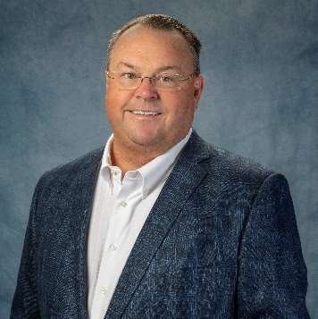
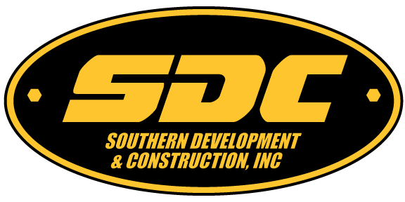
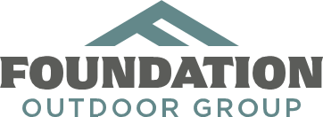
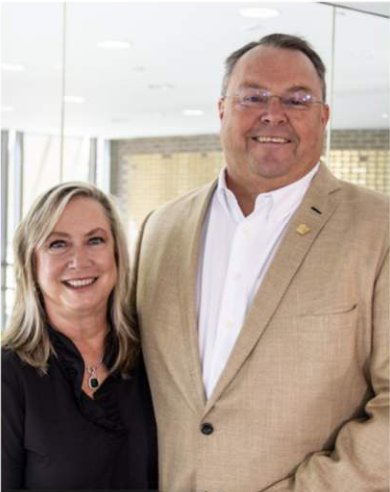

Leadership beyond business
Tom serves on the UCF Board of Trustees. His university involvement has also included the UCF Foundation and UCF Athletics, along with founding The Kingdom NIL in 2022 to support student-athletes.
CENTRAL FLORIDA ROOTS. LASTING IMPACT.
Entrepreneur. Builder. UCF advocate.
A third-generation contractor with an engineer’s perspective and a commitment to the people, businesses, and communities that make Central Florida home.
Explore my businesses
01 / ABOUT TOM
From building Florida’s infrastructure to growing businesses in the outdoor industry, Tom’s career brings together entrepreneurship, technical expertise, and hands-on leadership.
The grandson of Irish immigrants and a third-generation contractor, Thomas J. McNamara founded Southern Development & Construction in Oviedo in 1994. His work spans commercial, residential, institutional, public works, and theme park projects.
Tom earned his bachelor’s degree in Electrical Engineering from the University of Central Florida in 1988 and pursued graduate studies in Engineering Project Management. His Florida credentials include building, electrical, underground utility, and Class 5 fire contracting.
Tom and his wife Stacey, a fellow UCF graduate, share a longstanding commitment to their alma mater, their family, and their Central Florida community.
02 / BUSINESSES & BRANDS
Heavy civil construction, land development, specialty services, and the outdoors. Explore the companies and brands across Tom’s business interests.
Founded in 1994, SDC delivers earthwork, underground utilities, roadway construction, and site development for public and private clients across Central Florida.
sdcfl.com
Co-founded with Andon Calhoun, Axis brings together land acquisition, entitlements, development, and finished lot delivery.
axisdevelopment.us UNDERGROUND INFRASTRUCTUREHydro excavation, pipeline cleaning, CCTV inspection, and trenchless rehabilitation for underground infrastructure.
provac.biz HAULING & MATERIALSConstruction hauling, material delivery, and logistics that help contractors keep their job sites moving.
sun-trucking.com PAVING & ASPHALTAsphalt paving, repairs, sealcoating, and striping for roads and parking areas throughout Central Florida.
a1paving.biz VOLUMETRIC CONCRETEFresh concrete mixed at the job site, serving residential and commercial projects with flexible delivery quantities.
concrete-mix.comTom’s entrepreneurial work in the fishing industry includes Foundation Outdoor Group, a portfolio of fishing and rod-building brands.
foundationoutdoorgroup.com
03 / COMMUNITY & UCF
For Tom and Stacey, giving back is a family commitment.
Their support of UCF connects education, athletics, and opportunities for the next generation. Together, they received UCF’s 2022 Distinguished Alumni Award.
View Tom’s UCF trustee profile
Tom serves on the UCF Board of Trustees. His university involvement has also included the UCF Foundation and UCF Athletics, along with founding The Kingdom NIL in 2022 to support student-athletes.
A $1 million gift commitment from Tom and Stacey helped make McNamara Cove possible, supporting UCF’s vision for student-athlete recovery and a distinctive gathering place for Knight Nation.
Read the UCF storyThrough their businesses and the McNamara Family Foundation, the family has supported causes in housing, conservation, veterans’ services, youth fishing, and cancer-related initiatives.